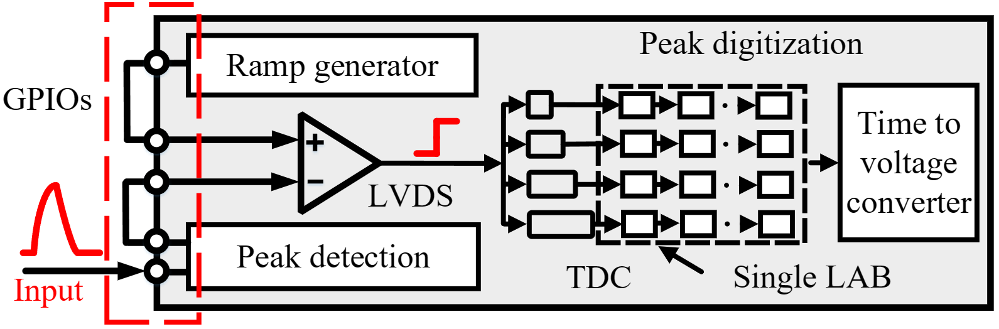

<div id="body">
    <div id="body_border">
    <div id="body_border1">
    <div style="border-bottom: 1px solid #D1D1D1;">
    <div style="border-bottom: 1px solid #959595;">
    <div class="header" style="text-align: center;">
    <div class="line4" style="font-family: Arial, Helvetica, sans-serif; text-align: center;"><span style="color: #000000;"><strong><span class="style17"><span style="background-color: #ffffff;"> 　<font size=6>Peak Detector with An FPGA-only Solution for Multi-Channel Ultra-Fast Signals</font> </span></span><span style="background-color: #ffffff;">&nbsp;</span></strong></span></div>
    </div>
    </div>
    </div>
    <!--header 结束-->
    <div class="IndexList">
    <div id="selfIntroduction" class="style4">
    <p class="style1"><strong>Project Description:</strong></p>
    <p> Peak detection is useful in a wide range of applications. To achieve this task, conventional approaches (including dedicated ASIC-based designs) often demand analog readout chains and compulsory add-ons (e.g., additional ADC for peak sampling), rendering them neither compact nor flexible. In this paper, we propose an FPGA-only solution to fulfill this task without any external components. Specifically, we achieve peak detection with only an LVDS comparator and two GPIOs. Therefore, one can flexibly make a practical deployment by a simple routing process, a non-trivial task even for inexperienced engineers. Meanwhile, to further compact the design for peak sampling, we leverage an FPGA-based slope ADC within which, we propose a new resource-efficient and calibration-free TDC architecture. The underlying rational is to minimize the nonlinearity problem by squeezing all resources within a single LAB. We have implemented a prototype using Xilinx FPGA and extensively evaluated its performance in rather challenging scenarios. Results demonstrate a peak digitization error of only about 30mV in a full 1.8V range for impulses with as few as 10ns pulse width. Meanwhile, in a practical deployment that requires a wide range of peak sampling, the achieved energy resolution is only 1.3% worse than a dedicated high-speed oscilloscope.</p>
    <p><strong><span class="style1">Acknowledgement:</span> </strong></p>
    <ul>
    <li>This project is filed on December 2021 and is patented. For more information please visit our <a href="https://github.com/caichao/peak">git repository</a>
    <!--<p><strong><span class="style1">Updates &amp; News:</span> </strong></p>
    </li>
    </ul>
    </div>
    <div id="selfIntroduction" class="style4">
    <ul>
    <li><strong>2018/12</strong> The <span class="style18"> <strong>mRehab</strong></span> team wins the finalist award (5 out of 74 teams) in NYS Department of Health Aging Innovation Competitions.</li>
    <li><strong>2018/04</strong> The <span class="style18"> <strong>mRehab </strong></span>product starts the first in-home study in East Amherst, NY.</li>
    <li><strong>2018/03</strong> The <span class="style18"> <strong>mRehab </strong></span>student team wins the 2nd place award in UB Aging Innovation Challenges.</li>
    <li><strong>2018/02</strong> The android app of <span class="style18"> <strong>mRehab</strong></span> will be launched in early March 2018.-->
    <p><strong><span class="style1">People:</span> </strong></p>
    <ul>
    <li>Dr. Chao Cai (Associate Proffessor, College of Life Science &amp; Engineering) - Huazhong University of Science and Technology</li>
    <li>Fei Wang(Ph.D student, College of Life Science &amp; Engineering) - HUST</li>
    <li>Jiawen Zhou (Master student, College of Life Science &amp; Engineering) - HUST</li>
    <li>Ziyi Wong (Master student, College of Life Science &amp; Engineering) - HUST</li>
    </ul>
    <!--<p><strong><span class="style1">Collaborators:</span> </strong></p>
    <p>Dr. Feng Lin, University of Colorado Denver</p> -->
    <p><strong><span class="style1">Related Publications:</span> </strong></p>
    </li>
    </ul>
    </div>
    <div id="selfIntroduction" class="style4">
    <ul>
    <li>[1] Chao Cai, Fei Wang, Qingguo Xie, Jun Luo. "Peak Detector with An FPGA-only Solution for Multi-Channel Ultra-Fast Signals", in arxiv,2023 </li>
    </ul>
    </div>
    </div>
    </div>
    </div>
    </div>
    <!--body结束-->